| 日付 | 2026年4月18日（土） |
|---|---|
| 山域 | 安蘇山塊 |
| メンバー | 家族（妻） |
| 山行形態 | 日帰り |
| アクセス | 車 |
| ルート (Map) | 登山口駐車場 (8:39) - (9:21) 三床山 - (10:25) 桜山 - (11:19) 一床山 (11:57) - (12:09) 二床山 - (12:42) 登山口駐車場 |
栃木県にある三床山は前から少し気になっていた山だった。
軽く登れる岩がちな山らしく、春の晴れの一日に登ってみることにする。
登山口の駐車場に到着。標高90m。
駐車場の前にはソーラーパネルが並んでいる。
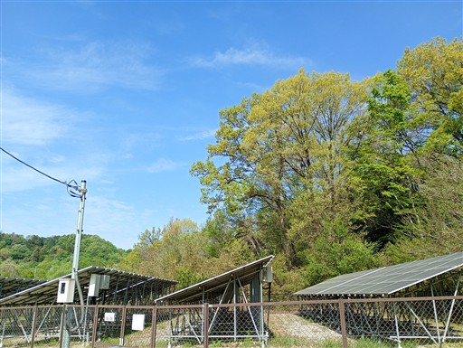
登山口にある鹿嶋神社。
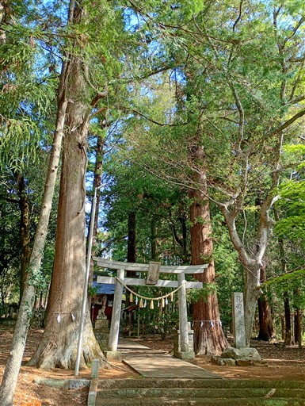
周囲の森は細い木が密集している。
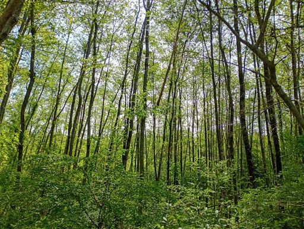
沢コースを見送り、尾根コースに入って行く。
ヒョロッとした細い木が並ぶ中で、ところどころに太い針葉樹が生えている。
あまり見ない植生の山だ。
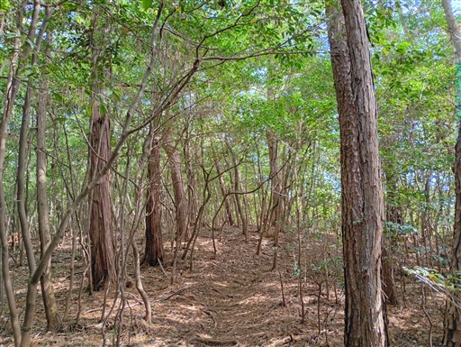
途中で展望が広がる。遠くに見えているのは赤城山だ。
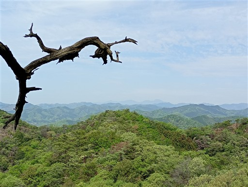
ちょっと新緑には遅すぎたが、美しい風景が広がる。
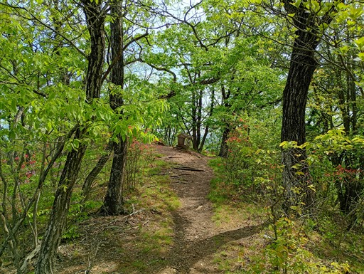
あっという間に三床山に到着。標高335m。
山頂には小さな石祠がある。
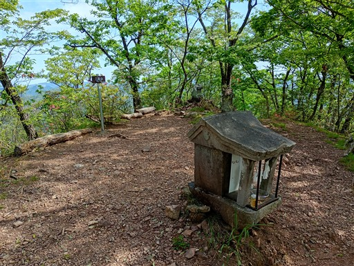
樹林に囲まれた山頂からは、さほど展望が広がらない。
一方、ミツバツツジ、ヤマツツジなど様々な花が目を楽しませてくれる。
遠くには小さく男体山が見えている。
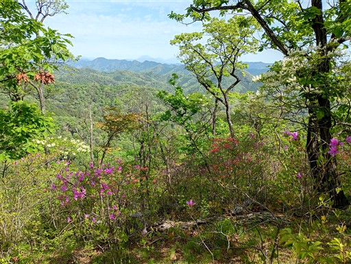
ここから先は結構な急斜面の下り。
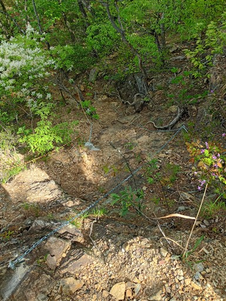
ヤマツツジが満開だ。あちらこちらに咲いている。
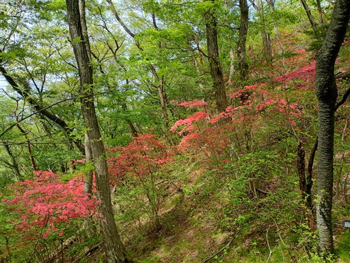
もう一つ、白い花もあちらこちらに咲いている。調べたらアオダモの花らしい。
あまり目立たないが、白くてフワッとしている。
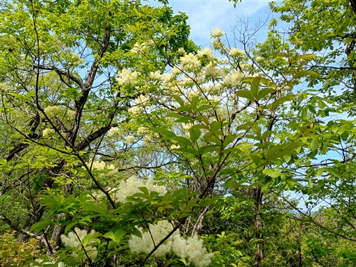
小さな岩があったので登ってみる。簡単に登れる。
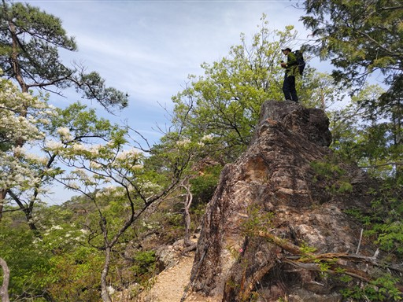
長い鎖場が現れる。
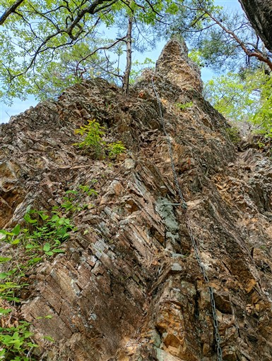
迂回路もあるが、直登する。
難易度は高くないが、岩がちょっと脆い。
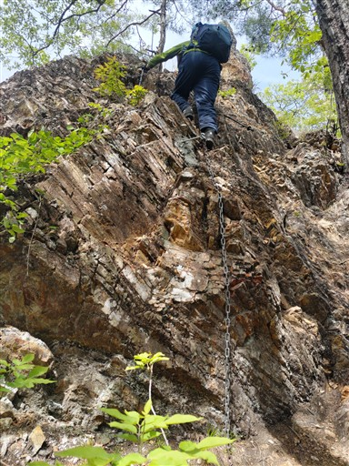
ここから桜山周回コースに入って行く。標識は完備されている。
直接、二床山に向かう道にはなぜか標識が無い。
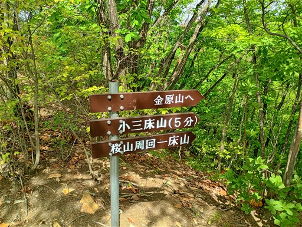
歩きやすい尾根道。
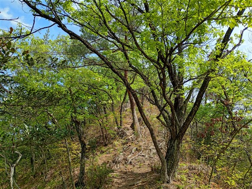
松の木に生えたキノコ。
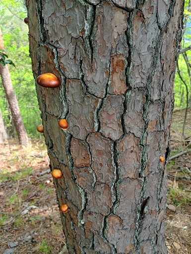
栗谷坂峠にある崩れた石。
ただの自然の石に見えるが手前に台座らしきものがあり、賽銭も置かれている。
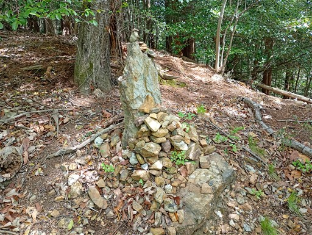
つつじ山に到着。
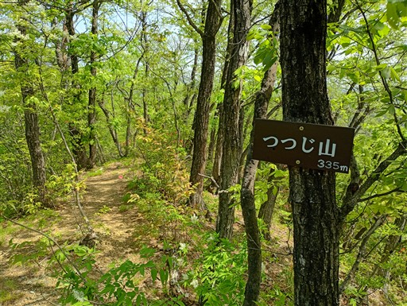
続いて桜山。標高355mで、本日の最高峰だ。
つつじ山と桜山、いずれも花の名前が付いている。
桜がきれいな山なのかもしれないが、残念ながらもう花は終わっている。
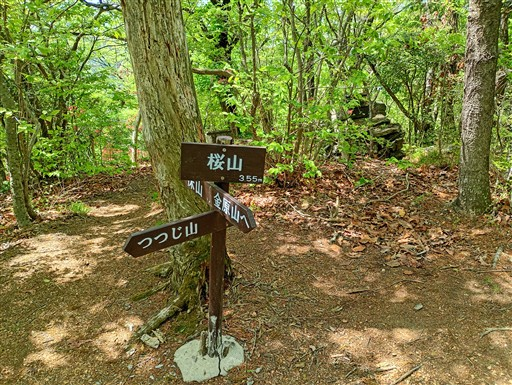
ここにも小さな石祠がある。文政十三年と彫られている。1830年だ。
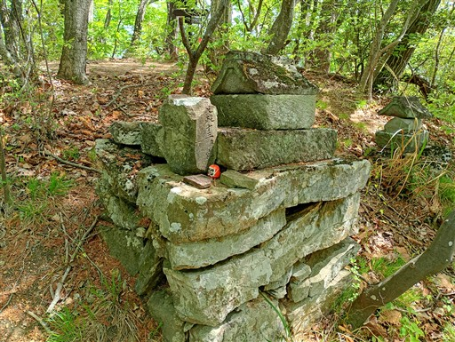
ところどころで展望が広がる。
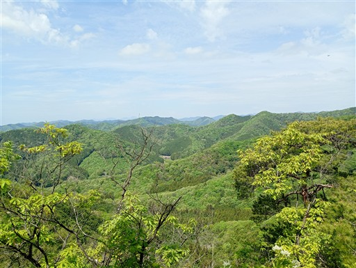
道端にある石像。頭の部分が欠けている。
栗谷坂峠で見た石は石像が崩壊したものなのかもしれない。
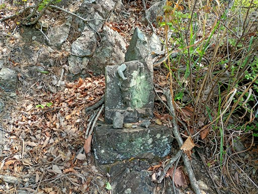
一旦、下界に近いところまで下りてくる。この辺りは林道だ。
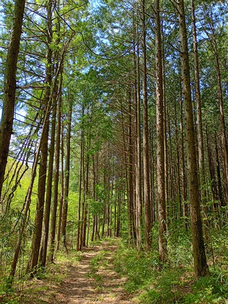
再び登り。二つ分の山に登る感じだが、標高が低いので大した負荷ではない。
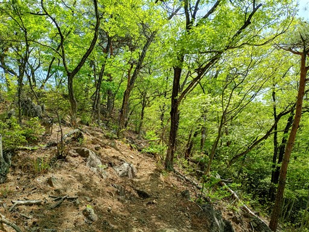
一床山に到着。この山頂はこれまでの山々と比べて圧倒的に展望が良い。
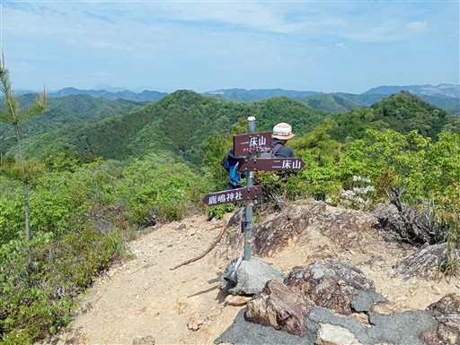
五円玉でできた鐘。
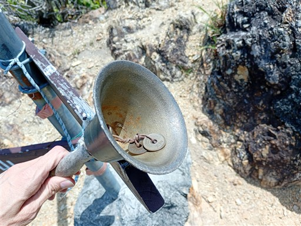
目の前に見えるのは二床山。
展望の良い山頂で昼食休憩をとる。
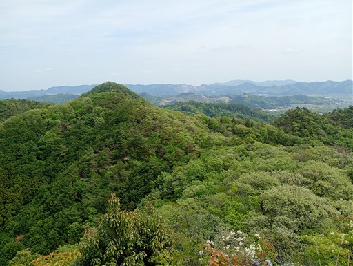
下山道はいきなり、かなりの急斜面。鎖が設置されている。
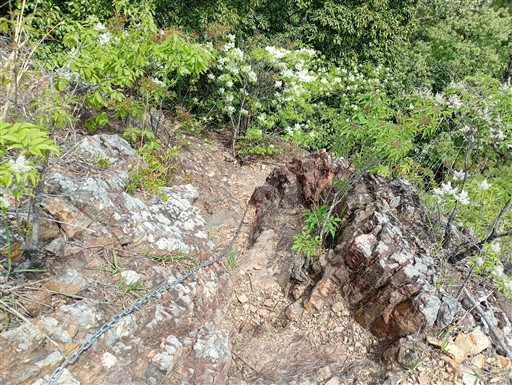
下って登って二床山に到着。標識は一、二、三と揃い踏みだ。
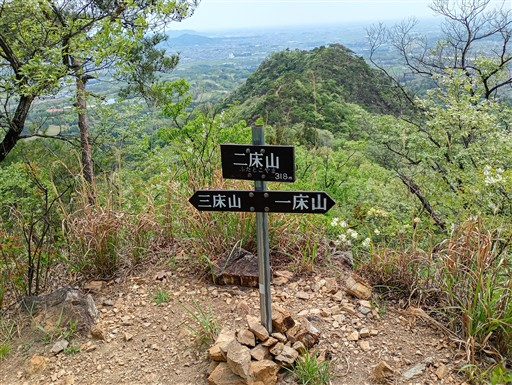
下山道にもアオダモは群生している。本当にこの山のあちらこちらで見られる。
この木は野球のバットに使われる木らしい。
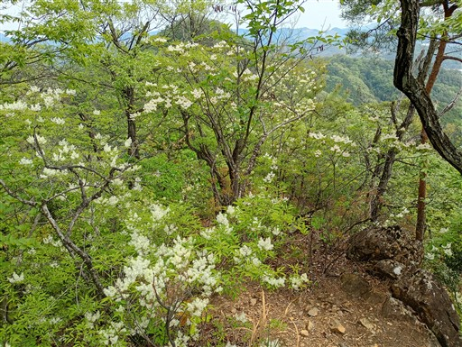
簡単な鎖場を超える。
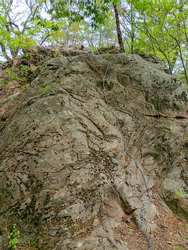
高松山を通過。
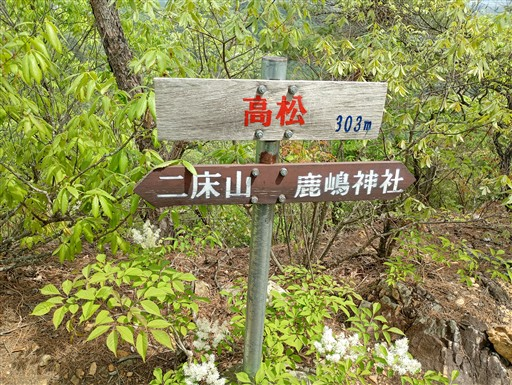
再びヒョロッとした木と針葉樹の混生林。
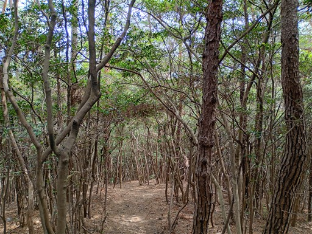
常緑樹の葉の上に松の葉が積もっていて景観が悪い。
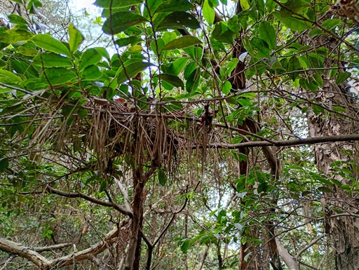
無事下山。
三床山は短いながらも岩場があり、ツツジやアオダモの花が目を楽しませてくれ、楽しい山だった。
コースとしては短めなので、次の山は少し長い山を歩いてみたい。
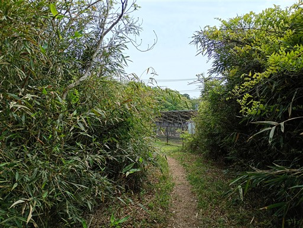